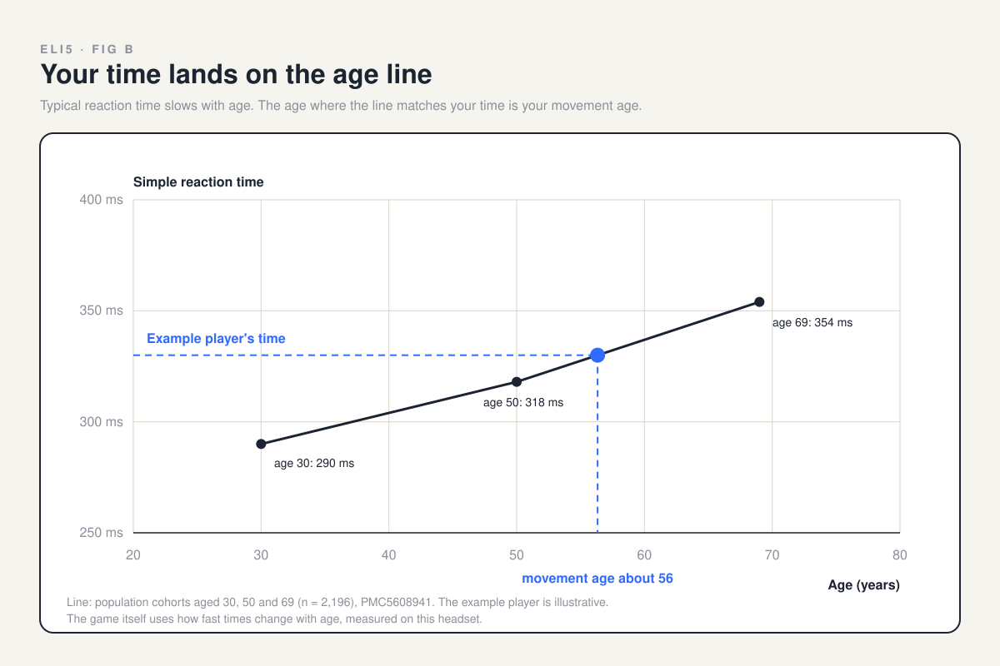
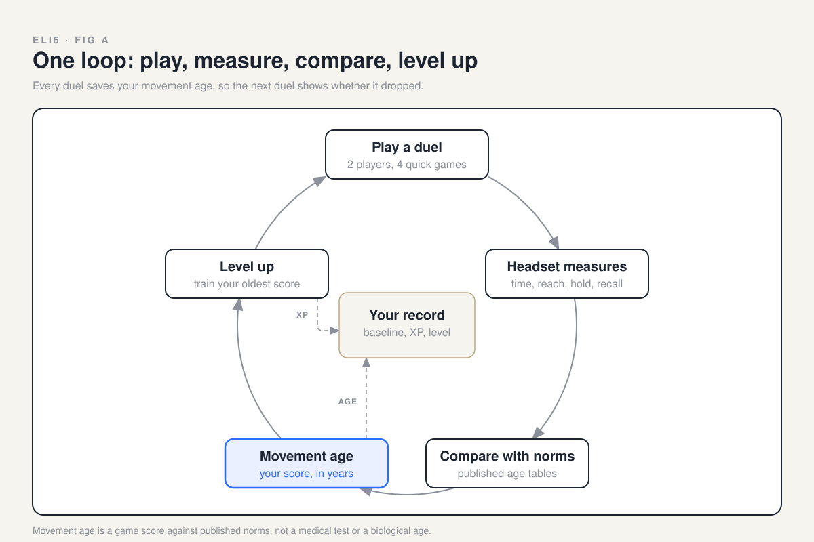

<title>Movement Age Explained</title>
<style>
  /* Layout: one calm column of big pictures, the concept deck's warm paper and navy ink, one blue accent */
  :root {
    --paper: #f6f4ef; --card: #ffffff; --ink: #1b2430; --muted: #5f6672;
    --rule: #d9d4c7; --accent: #2f6bff; --orange: #ff7a3d; --tan: #bfa680;
    --face: "Helvetica Neue", Helvetica, Arial, sans-serif;
  }
  @media (prefers-color-scheme: dark) {
    :root:not([data-theme="light"]) {
      --paper: #11161d; --card: #1b2430; --ink: #f1efe9; --muted: #a3a9b3;
      --rule: #2c3644; --accent: #6d97ff; --orange: #ff8f5c; --tan: #cbb593; color-scheme: dark;
    }
  }
  :root[data-theme="dark"] {
    --paper: #11161d; --card: #1b2430; --ink: #f1efe9; --muted: #a3a9b3;
    --rule: #2c3644; --accent: #6d97ff; --orange: #ff8f5c; --tan: #cbb593; color-scheme: dark;
  }
  body { background: var(--paper); color: var(--ink); font-family: var(--face); line-height: 1.5; }
  .wrap { max-width: 920px; margin: 0 auto; padding-inline: 16px; padding-block: 48px 64px; display: grid; gap: 56px; }
  .eyebrow { font-size: 13px; font-weight: 700; letter-spacing: 0.24em; text-transform: uppercase; color: var(--muted); margin: 0; }
  h1 { font-size: clamp(32px, 6vw, 52px); line-height: 1.05; margin: 8px 0 12px; text-wrap: balance; letter-spacing: -0.01em; }
  h2 { font-size: clamp(24px, 4vw, 32px); line-height: 1.15; margin: 0 0 8px; text-wrap: balance; }
  .lede { font-size: 20px; color: var(--muted); max-width: 40ch; margin: 0; }
  section { display: grid; gap: 16px; }
  .step { display: flex; gap: 14px; align-items: baseline; }
  .num { font-size: 15px; font-weight: 700; color: var(--accent); font-variant-numeric: tabular-nums; }
  .say { font-size: 18px; color: var(--muted); margin: 0; max-width: 52ch; }
  .stage { background: var(--card); border: 2px solid var(--ink); border-radius: 16px; padding: 24px; }
  .illus { width: 100%; height: auto; display: block; color: var(--ink); }
  .illus .acc { stroke: var(--accent); } .illus .accf { fill: var(--accent); }
  .illus .org { fill: var(--orange); } .illus .mut { stroke: var(--rule); }
  .games { display: grid; grid-template-columns: repeat(4, minmax(0, 1fr)); gap: 12px; }
  .game { background: var(--card); border: 1px solid var(--rule); border-radius: 12px; padding: 16px 12px; display: grid; justify-items: center; gap: 8px; text-align: center; }
  .game svg { width: 72px; height: 72px; color: var(--ink); }
  .game b { font-size: 17px; }
  .game span { font-size: 13px; font-weight: 700; letter-spacing: 0.12em; text-transform: uppercase; color: var(--accent); }
  .game small { font-size: 14px; color: var(--muted); line-height: 1.3; }
  .note { font-size: 16px; color: var(--muted); margin: 0; max-width: 60ch; }
  .chips { display: flex; flex-wrap: wrap; gap: 8px; }
  .chip { border: 1.5px solid var(--ink); border-radius: 999px; padding: 6px 14px; font-size: 15px; font-weight: 600; }
  figure { margin: 0; }
  figure img { width: 100%; height: auto; display: block; border-radius: 16px; }
  .fine { border-top: 1px solid var(--rule); padding-top: 20px; display: grid; gap: 8px; font-size: 15px; color: var(--muted); }
  .fine p { margin: 0; max-width: 70ch; }
  .fine a { color: var(--accent); }
  a:focus-visible { outline: 2px solid var(--accent); outline-offset: 2px; }
  @media (max-width: 640px) {
    .games { grid-template-columns: repeat(2, minmax(0, 1fr)); }
    .stage { padding: 12px; }
  }
</style>

<main class="wrap">
  <header>
    <p class="eyebrow">Sundai Hack 143 · ELI5</p>
    <h1>How the game finds your movement age</h1>
    <p class="lede">You play. The headset watches. We compare you with people of every age.</p>
  </header>

  <section aria-labelledby="s1">
    <div class="step"><span class="num">1</span><h2 id="s1">Two players, two headsets</h2></div>
    <p class="say">You and a friend each wear a Vision Pro and play the same games side by side.</p>
    <div class="stage">
      <svg class="illus" viewBox="0 0 600 220" role="img" aria-label="Two players in headsets reaching for floating targets between them">
        <g fill="none" stroke="currentColor" stroke-width="4" stroke-linecap="round" stroke-linejoin="round">
          <path d="M56 212 Q56 148 120 148 Q184 148 184 212"/>
          <circle cx="120" cy="92" r="36"/>
          <path d="M416 212 Q416 148 480 148 Q544 148 544 212"/>
          <circle cx="480" cy="92" r="36"/>
          <path d="M172 176 L244 132"/>
          <path d="M428 176 L356 148"/>
        </g>
        <rect x="104" y="76" width="56" height="24" rx="12" fill="currentColor"/>
        <rect x="440" y="76" width="56" height="24" rx="12" fill="currentColor"/>
        <circle cx="248" cy="130" r="8" fill="currentColor"/>
        <circle cx="352" cy="148" r="8" fill="currentColor"/>
        <circle cx="300" cy="72" r="20" class="accf"/>
        <circle cx="262" cy="128" r="14" class="accf" opacity="0.85"/>
        <circle cx="338" cy="150" r="14" class="org"/>
        <g class="acc" stroke-width="3" stroke-linecap="round" fill="none">
          <path d="M300 36 V44"/><path d="M332 48 L326 54"/><path d="M268 48 L274 54"/>
        </g>
      </svg>
    </div>
  </section>

  <section aria-labelledby="s2">
    <div class="step"><span class="num">2</span><h2 id="s2">Four quick games</h2></div>
    <p class="say">Each game checks one thing your body or brain does every day.</p>
    <div class="games">
      <div class="game">
        <svg viewBox="0 0 64 64" role="img" aria-label="A falling blade above a catching hand"><g fill="none" stroke="currentColor" stroke-width="3" stroke-linecap="round" stroke-linejoin="round"><path d="M32 6 L37 26 L32 30 L27 26 Z"/><path d="M32 30 V40"/><path d="M18 8 V18 M46 8 V18"/></g><path d="M16 50 Q32 62 48 50" fill="none" stroke="#2f6bff" stroke-width="3" stroke-linecap="round"/></svg>
        <b>Catch</b><span>reaction</span><small>Grab the falling knives</small>
      </div>
      <div class="game">
        <svg viewBox="0 0 64 64" role="img" aria-label="Colored dots, with one being tapped"><circle cx="14" cy="18" r="8" fill="#2f6bff"/><circle cx="48" cy="14" r="8" fill="#ff7a3d"/><circle cx="34" cy="38" r="8" fill="#2f6bff"/><circle cx="12" cy="50" r="7" fill="none" stroke="currentColor" stroke-width="3"/><g fill="none" stroke="currentColor" stroke-width="3" stroke-linecap="round"><path d="M46 56 L38 46"/><path d="M48 40 V44 M56 46 H52 M54 52 L51 50"/></g></svg>
        <b>Color dots</b><span>memory</span><small>Tap only the dots you saw</small>
      </div>
      <div class="game">
        <svg viewBox="0 0 64 64" role="img" aria-label="Person leaning forward with arm reaching"><g fill="none" stroke="currentColor" stroke-width="3" stroke-linecap="round" stroke-linejoin="round"><circle cx="18" cy="14" r="6"/><path d="M19 20 L24 40"/><path d="M24 40 L18 58 M24 40 L30 58"/></g><path d="M21 26 L46 22" fill="none" stroke="#2f6bff" stroke-width="3" stroke-linecap="round"/><rect x="48" y="14" width="12" height="12" rx="2" fill="#2f6bff"/></svg>
        <b>Reach and grab</b><span>reach</span><small>Tap to grab, reach farther</small>
      </div>
      <div class="game">
        <svg viewBox="0 0 64 64" role="img" aria-label="A wall with a person-shaped hole moving toward the player"><rect x="10" y="4" width="44" height="56" rx="2" fill="none" stroke="currentColor" stroke-width="3"/><g fill="none" stroke="#2f6bff" stroke-width="3" stroke-linecap="round" stroke-linejoin="round"><circle cx="32" cy="16" r="5"/><path d="M32 21 V40"/><path d="M18 26 L32 30 L46 22"/><path d="M32 40 L26 54 M32 40 L38 54"/></g><g fill="none" stroke="currentColor" stroke-width="2" stroke-linecap="round"><path d="M2 20 H6 M2 32 H6 M2 44 H6"/></g></svg>
        <b>Hole in the wall</b><span>balance</span><small>Hold the pose, beat the wall</small>
      </div>
    </div>
    <p class="note">Both balance games keep your feet on the floor, so you find your limits before you ever fall.</p>
  </section>

  <section aria-labelledby="s3">
    <div class="step"><span class="num">3</span><h2 id="s3">The headset watches your head and hands</h2></div>
    <p class="say">That is enough to time you, measure you and check what you remember.</p>
    <div class="stage">
      <svg class="illus" viewBox="0 0 600 240" role="img" aria-label="A headset tracking two hands, shown as dots on each palm and fingertip">
        <g class="acc" fill="none" stroke-width="2.5" stroke-dasharray="7 7"><path d="M276 104 L172 168"/><path d="M324 104 L428 168"/></g>
        <circle cx="300" cy="76" r="40" fill="none" stroke="currentColor" stroke-width="4"/>
        <rect x="266" y="60" width="68" height="28" rx="14" fill="currentColor"/>
        <g fill="none" stroke="currentColor" stroke-width="4" stroke-linecap="round" stroke-linejoin="round">
          <path d="M128 228 V188 Q128 168 148 168 H176 Q196 168 196 188 V228"/>
          <path d="M404 228 V188 Q404 168 424 168 H452 Q472 168 472 188 V228"/>
        </g>
        <g class="accf">
          <circle cx="162" cy="200" r="7"/><circle cx="130" cy="150" r="5"/><circle cx="146" cy="138" r="5"/><circle cx="162" cy="134" r="5"/><circle cx="178" cy="138" r="5"/><circle cx="196" cy="156" r="5"/>
          <circle cx="438" cy="200" r="7"/><circle cx="404" cy="156" r="5"/><circle cx="422" cy="138" r="5"/><circle cx="438" cy="134" r="5"/><circle cx="454" cy="138" r="5"/><circle cx="470" cy="150" r="5"/>
        </g>
      </svg>
    </div>
    <p class="note">Bonus: the same hand tracking powers an x-ray view of your own hand.</p>
    <div class="chips" aria-label="What the headset measures">
      <span class="chip">how fast you catch</span><span class="chip">how far you reach</span><span class="chip">how still you hold</span><span class="chip">what you remember</span>
    </div>
  </section>

  <section aria-labelledby="s4">
    <div class="step"><span class="num">4</span><h2 id="s4">We find the age that matches you</h2></div>
    <p class="say">Scientists measured thousands of people of every age. Where your score lands is your movement age.</p>
    <figure></figure>
  </section>

  <section aria-labelledby="s5">
    <div class="step"><span class="num">5</span><h2 id="s5">Play again. Get better. Watch it drop.</h2></div>
    <p class="say">Each duel saves your movement age, so you can see the number move as you level up.</p>
    <figure></figure>
  </section>

  <footer class="fine">
    <p><strong>Movement age is a game score, not a medical test.</strong> It compares your results with published studies. It is not your biological age, and it does not diagnose anything.</p>
    <p>Sources: <a href="https://pmc.ncbi.nlm.nih.gov/articles/PMC5608941/">reaction time at ages 30, 50 and 69</a> · <a href="https://pmc.ncbi.nlm.nih.gov/articles/PMC9422043/">balance and reach norms</a> · <a href="https://pmc.ncbi.nlm.nih.gov/articles/PMC12976848/">headset versus PC timing</a> · <a href="https://github.com/hunterh37/SpatialHumanAssesment/pull/1">full PRD</a></p>
  </footer>
</main>
